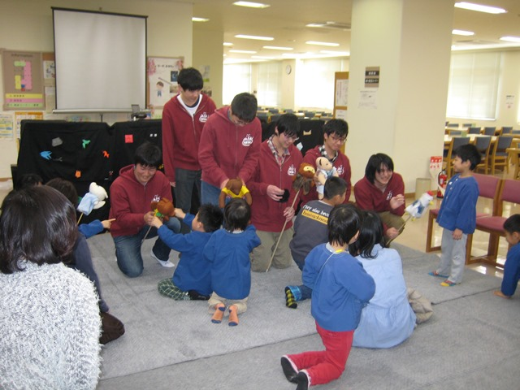

マーチ・スタディ2015
平成28年3月28日(土)、岡山理科大学21号館3F図書館で、幼稚園児〜小学生低学年を対象に、
マーチ・スタディ
が開催されました。
参加者：児童8名、保護者の方3名
10:00〜11:00
人形劇「銀河鉄道の夜」
協力：児童文化部
◆人形劇「銀河鉄道の夜」◆
子供たちは、児童文化部のお兄さんの人形劇に、釘付けです。
途中で出された質問にもテキパキと答えます。
最後は、人形達と遊んで、和やかな雰囲気の内に、マーチ・スタディ終了です。
